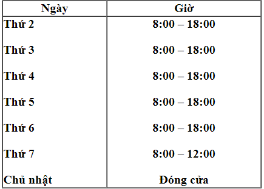

Phòng thông tin thư viện
Giờ mở cửa

Phần I. Giới thiệu Phòng Thông tin – Thư viện
1. Chức năng, nhiệm vụ: Phòng thông tin - thư viện trường Đại học FPT (cơ sở Hà Nội) là một trung tâm học liệu tích hợp được xây dựng và phát triển với nhiệm vụ hỗ trợ hiệu quả việc giảng dạy, nghiên cứu và các hoạt động học thuật của đội ngũ giảng viên, nhân viên và sinh viên FPT (sau đây gọi là Bạn đọc).
2. Bộ sưu tập tài liệu
- Hơn 35,213 bản sách giáo khoa và tham khảo chuyên ngành.
- Báo, tạp chí được cập nhật bao gồm: Echip, Làm bạn máy tính, thời báo vi tính, Hoa học trò, Sinh viên Việt Nam, Thời báo kinh tế tài chính, Báo lao động, PC world…(15 loại).
- Bộ sưu tập tài liệu tham khảo bao gồm Từ điển, Bách khoa toàn thư…
- Bộ sưu tập DVD, CD phục vụ nhu cầu học tập, nghiên cứu thuộc nhiều chuyên ngành, lĩnh vực.
- Dịch vụ tham khảo/đọc tại chỗ
- Dịch vụ mượn trả
- Hướng dẫn sử dụng thư viện
- Hướng dẫn kỹ năng tìm tin (qua libol, trên internet)
- Truy cập tài liệu điện tử
Phần II. Các chính sách thư viện
1. Chính sách mượn trả- Xuất trình thẻ (sinh viên/nhân viên) khi thực hiện mượn/trả tài liệu.
- Sinh viên, giảng viên, nhân viên FU : 10 quyển(tiếng Việt 7 ngày, tiếng Anh 14 ngày)
- Sinh viên: Giáo trình được phát đầu block và cần phải trả cuối block trước khi mượn giáo trình của block mới
- Giáo viên: Giáo trình được phát đầu học kỳ và cần phải trả lại trước khi vào kỳ mới
- Bạn có thể gia hạn giáo trình khi có lý do chính đáng, nhưng giáo trình không được gia hạn quá 1 tuần
- Tài liệu chỉ có thể được gia hạn nếu chưa quá hạn
- Để gia hạn sách bạn có thể liên lạc với chúng tôi theo cách: gọi điện thoại, gửi email hoặc đến trực tiếp thư viện
- Tài liệu mượn quá hạn sẽ bị phạt 5,000 đồng/tài liệu/ngày.
- Tài liệu rách, hỏng bị phạt 20,000 đồng/tài liệu (trong trường hợp tài liệu còn có thể sửa chữa được)
- Tài liệu hỏng không thể sửa chữa, quá hạn 30 ngày hoặc mất thì áp dụng chính sách “Phí đền sách” Phí đền sách = Giá bìa sách + Phí quá hạn
Lưu ý: Tài liệu mượn quá hạn nhưng số ngày quá hạn cao hơn giá tài liệu thì phí quá hạn được tính mức tối đa bằng giá tiền của tài liệu.
Ví dụ: Nguyễn Văn A mượn cuốn Submit1 có giá 128,000 đồng, đã quá hạn 60 ngày.
Phí đền sách của Nguyễn Văn A = 128,000 + 128,000 = 256,000 đồng
Phần III. Hướng dẫn tìm sách trên giá
- Tài liệu trong thư viện được phân loại và biên mục theo Khung phân loại Khoa học thập phân Dewey (DDC). Tài liệu được xếp giá theo ký hiệu xếp giá, bao gồm: kí hiệu phân loại từ 000 – 999 và chỉ số Cutter.
- Ví dụ: Cuốn sách “Software Engineering 8”, tác giả Sommerville, Ian có ký hiệu xếp giá là 005.1 S696
- 000 – Tin học, thông tin và tác phẩm tổng quát
- 100 – Triết học, cận tâm lý và thuyết huyền bí, tâm lý học
- 200 – Tôn giáo
- 300 – Khoa học xã hội
- 400 – Ngôn ngữ
- 500 – Khoa học tự nhiên và toán học
- 600 – Công nghệ (khoa học ứng dụng và Kinh tế)
- 700 – Nghệ thuật, Mỹ thuật và trang trí
- 800 – Văn học (văn chương) và tu từ học
- 900 – Lịch sử, địa lý và các ngành phụ trợ
Phần IV. Nội quy sử dụng thư viện
1. Những điều bạn đọc cần làm- Xuất trình thẻ sinh viên khi vào Thư viện. Không dùng thẻ của người khác và không cho người khác mượn thẻ của mình.
- Giữ gìn trật tự, vệ sinh, đi nhẹ, nói khẽ.
- Tắt chuông điện thoại, không nói chuyện điện thoại trong thư viện.
- Mang vào thư viện đồ ăn, thức uống, chất độc hại, chất cháy nổ...
- Hút thuốc lá, không viết, vẽ lên mặt bàn, xả rác hoặc tư thế ngồi không nghiêm túc.
- Vi phạm luật bản quyền về sử dụng tài liệu
- Phục vụ bạn đọc theo giờ mở cửa
- Tuân thủ nội quy sử dụng thư viện như quy định ở mục 1,2
- Hướng dẫn, giám sát và xử lý những trường hợp vi phạm
- Lập báo cáo vi phạm
- Bạn đọc vi phạm chính sách mượn trả tài liệu sẽ áp dụng theo chính sách phạt hành chính (quy định ở phần II – chính sách thư viện)
- Bạn đọc vi phạm các quy định tại Điều 1,2 tùy theo mức độ và lần vi phạm có thể bị nhắc nhở, khiển trách và mời ra khỏi thư viện; lập biên bản cảnh cáo, tạm ngừng sử dụng các dịch vụ thư viện hoặc sẽ bị tước quyền sử dụng các dịch vụ thư viện vĩnh viễn, tạm thời đình chỉ học tập hoặc buộc thôi học.
- Nhân viên thư viện vi phạm nội quy sẽ bị lãnh đạo thư viện nhắc nhở, khiển trách.